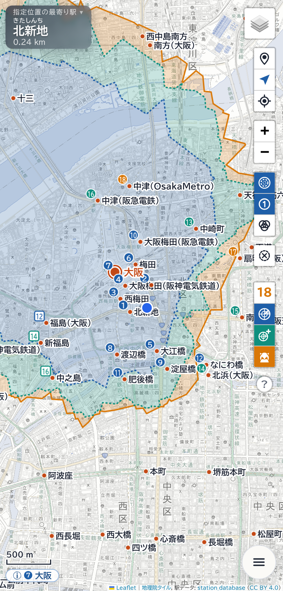
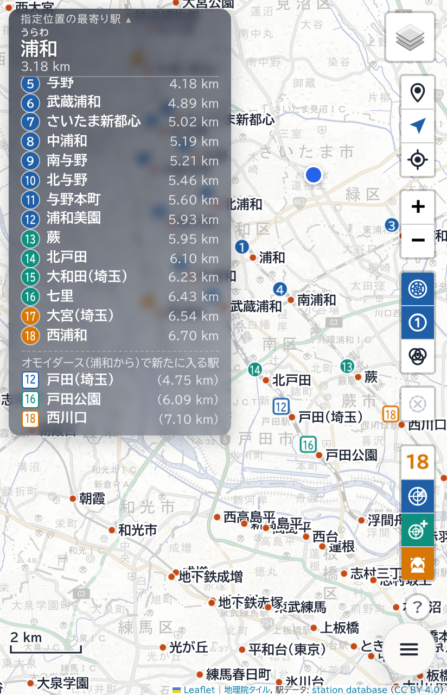
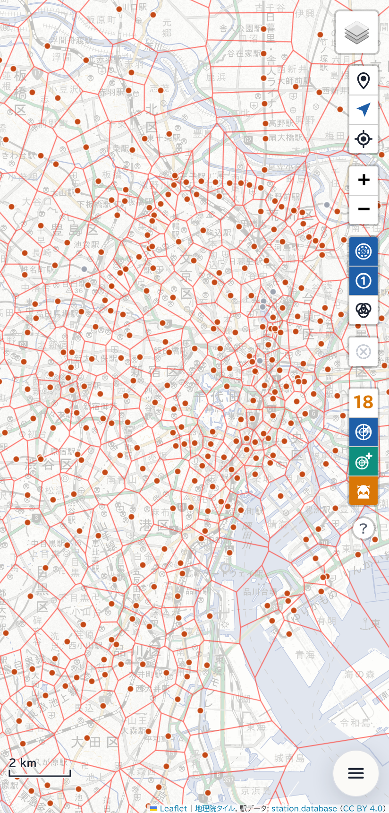
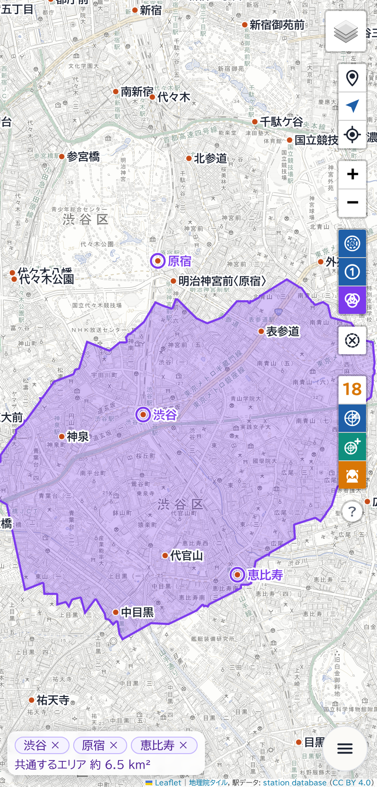
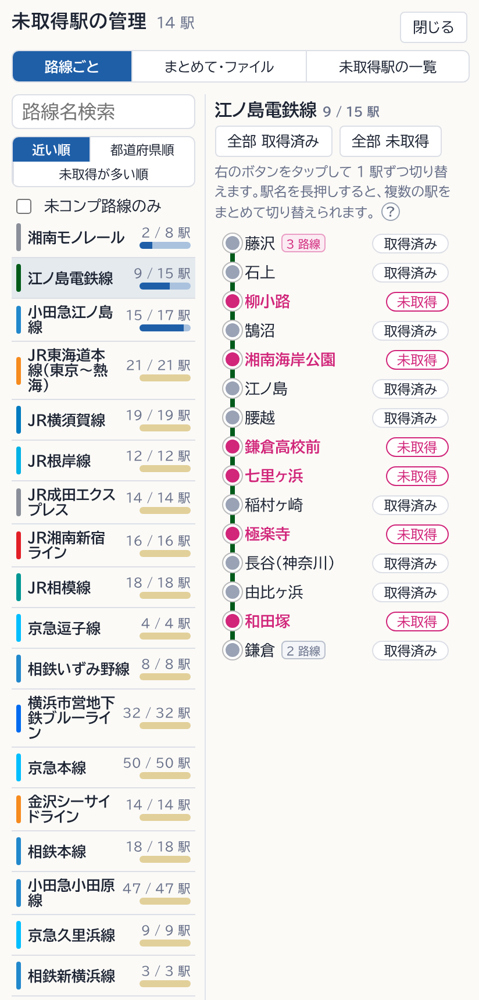
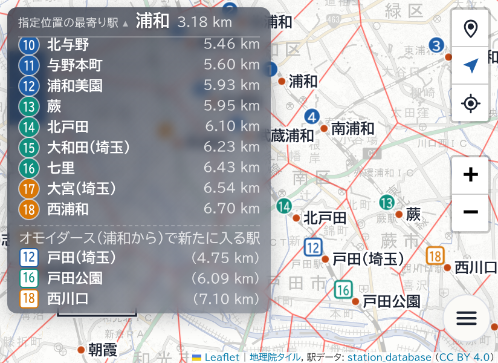

機能紹介
駅レーダーサイトは、駅メモ！のレーダーと位置登録について、ある場所からアクセスできる駅と、ある駅にアクセスできるエリアを地図に表示するウェブアプリです。駅メモ！の非公式ファンツールで、公式とは関係ありません。
目的から探す
- この駅にアクセスできる場所を知りたい → エリアの見方
- レーダーの検知数を変えたい → レーダーの検知数とアイテム・スキル
- 最寄り駅の案内の数字の意味を知りたい → 距離の数字
- 未取得駅を登録したい → 未取得駅：はじめに
- CSV ファイルを読み込みたい → CSV ファイル
- 通知が来ない → 通知が来ないとき
- オフラインで使いたい → オフラインとインストール
- 前のバージョンからの変更を知りたい → 更新履歴
主な機能
選んだ駅にアクセスできるエリア
駅を選ぶと、その駅がレーダーの検知対象になるエリアを地図に塗ります。レーダーブースターとなつめのスキルを使った場合のエリアは、色を分けて重ねて表示します（通常時・ブースター・なつめ）。
最寄り駅の案内と順位
現在地または指定位置（長押しで決める仮の現在地）から近い順に、レーダーの検知対象駅を一覧で表示します。設定をオンにすると、地図上の番号でも表示します。オモイダースを使用したときに検知対象になる駅も、区別して表示します。
隣接駅間の境界線
どの駅に位置登録できるかが切り替わる線を、地図上に表示します（既定ではズームレベル 10 以上）。ズームレベル 13 以上では、線に沿ってその区画の駅名を表示します。
複数の駅に共通するエリア
複数選択モードでは、選んだ駅（最大 12 駅）すべてにレーダーでアクセスできるエリアを紫で表示し、面積を示します。共通するエリアがないときは、その旨を表示します。
未取得駅の記録
まだアクセスしていない駅を「未取得駅」として記録し、地図上で目立たせることができます。路線ごとの一覧でのチェック、都道府県ごとの一括変更、CSV ファイルの読み込みと書き出しに対応しています。
レーダーの検知数とアイテム・スキル
［レーダーの検知数（通常時）］と、計算に含めるアイテム・スキル（［レーダー］［ブースター +4］［なつめ +2］）を選ぶと、エリアや順位の表示に反映します。
オフライン・インストール
一度開いたページは、電波が届かない場所でも使用できます。地理院の地図は、表示した範囲を端末に保存します。対応するブラウザでは、ホーム画面に追加して使用できます。
画面の例
画面の例の未取得駅などの記録と位置は、架空のものです。






動作環境
- スマートフォンと PC のウェブブラウザで動作します。アプリストアからのインストールやアカウントの登録は必要ありません。
- 現在地を利用するには、ブラウザで位置情報の利用を許可してください。
- 設定と未取得駅の記録は、そのブラウザの中に保存されます。別の端末やブラウザには引き継がれません。未取得駅の記録は、CSV ファイルに書き出して移すことができます。
スマートフォンのブラウザでは、ほかのアプリを前面にしている間、位置情報の更新と通知が止まります。
データの扱い
- 位置情報と未取得駅の情報は、端末の中（ブラウザの保存領域）にのみ保存し、作者を含む外部には送信しません。
- ブラウザのデータを消去すると、保存した情報は失われます。
- 地図・書体・ライブラリの表示のため、地理院タイル（国土地理院）、OpenStreetMap、OpenRailwayMap、Google Fonts、cdnjs と通信します。これらのサービスには、IP アドレス等が送信されます。〈駅データ更新〉で最新の駅データを取得するときは、GitHub（駅データの配布元）と通信します。地図の画像は、表示している範囲ごとに配信元から読み込むため、配信元には表示している地域が伝わります。
- 駅メモ！のアプリやサーバーとは通信しません。アクセスした駅の記録を自動で読み込むことはなく、未取得駅は利用者が自分で記録します。
駅データは station_database（CC BY 4.0）を使用しています。
注意
表示するエリアと順位は推定値です。駅メモ！での実際の判定と一致することは保証しません。ゲーム本体の距離の計算方法は確認していません。
歩行中・運転中の操作や、立入禁止の場所・私有地・線路への立ち入りはしないでください。利用条件・免責事項の全文は、アプリの〈このページについて〉と 公開リポジトリの README にあります。